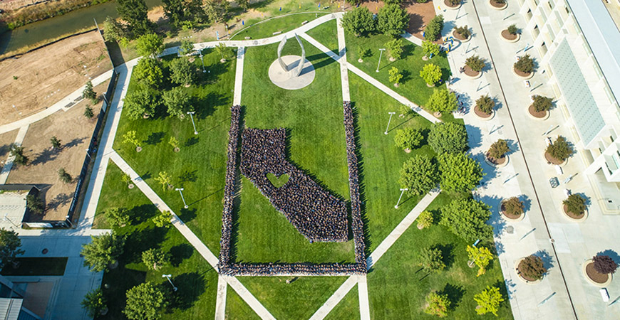

What is Citris ?
Center for Information Technology Research in the Interest of Society and the Banatao Institute at University of California, Merced

As an established Institute of Science and Innovation, CITRIS is a research and outreach enterprise within the School of Engineering at University of California Merced.
CITRIS UCM addresses California’s most pressing societal and environmental problems by leveraging cutting-edge technologies, developing novel research, and conducting inspiring outreach: Student-Driven Initiatives, Seed Grants & Faculty Research, and developing community, educational and industry partnerships.
Our History
Since its creation in 2001 as one of four interdisciplinary institutes for science and innovation at the University of California, CITRIS has demonstrated an impressive return on investment by any measure. Through collaboration with industry, government agencies, and international partners, CITRIS has enabled innovations in nanotechnology, computer science, engineering, manufacturing, social media, and other sectors.
In 2016, we recognize the Banatao Institute as an integral part of our affiliated UC campuses. In alignment with the goals and values of Dado and Maria Banatao, the Banatao Institute at CITRIS leverages University of California expertise and IT solutions for the benefit of developing regions in the U.S. and abroad. This widening sphere of influence is celebrated in our new name, CITRIS and the Banatao Institute.
Our Campus
Established in 2005, University of California’s newest campus is also the first American research university of the 21st Century. UC Merced has exceeded all expectations: reaching R2 status faster than any other campus, achieving carbon neutrality through investment in sustainability in every facet of life, and rapidly growing to educate 9,000 undergraduate and graduate students.
By being a member of the San Joaquin Valley community and serving as a representation of innovation, technology, and entrepreneurship in the heart of the state of California, UC Merced strives to deliver solutions to local and global problems.
At UC Merced, learning goes beyond textbooks and classrooms. Students gain hands-on experience through programs like Tech for Social Good and Innovate to Grow , where they apply team-based leadership skills to real-world projects.
Contact Us
Feel free to contact us at citris@ucmerced.edu . Our office is located on the third floor of the Sustainability Research and Engineering. The full address is:
University of California, Merced
5200 North Lake Road
SRE 311
Merced, California 95340